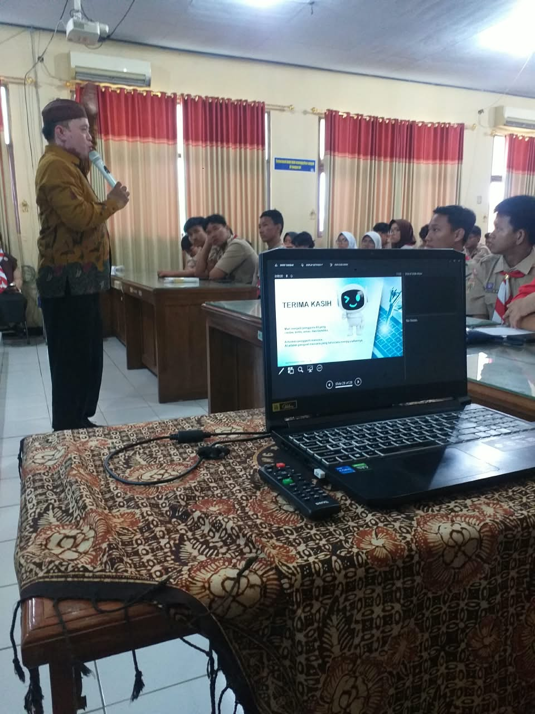
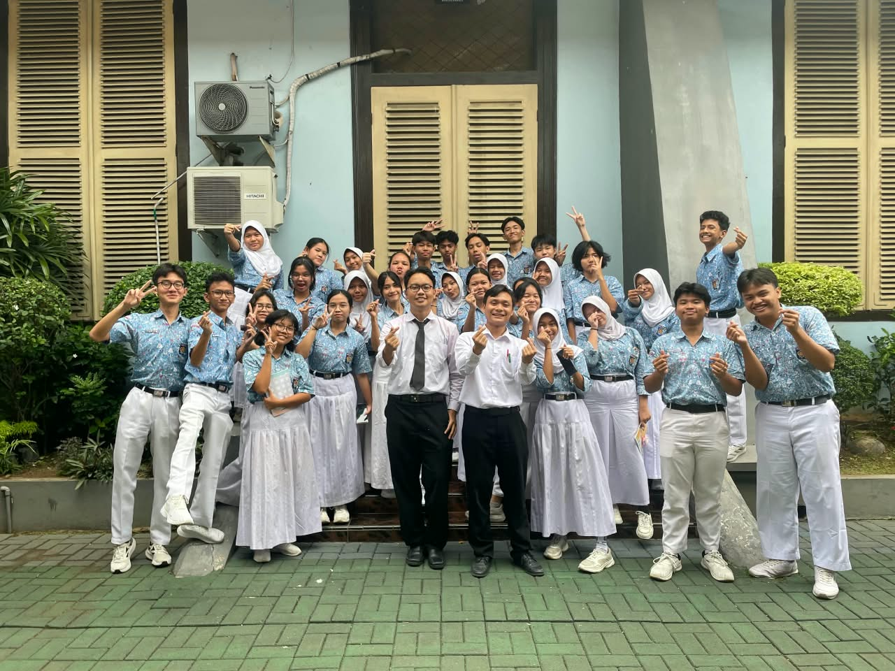
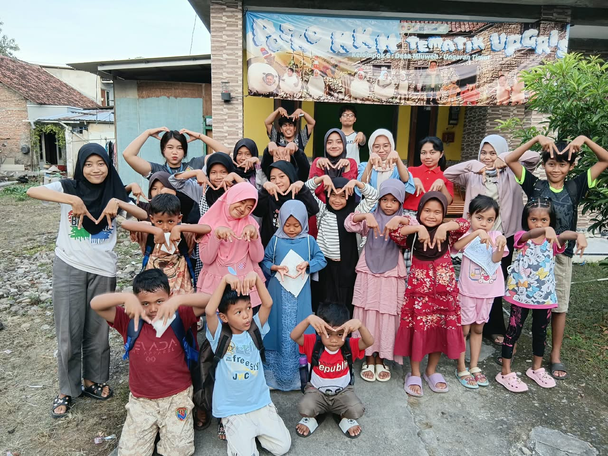

Activity photo

2023 – Present
Teaching Assistant
Universitas PGRI Semarang
Assisted practicum sessions, graded assignments and quizzes, prepared teaching materials, and supported lecturers' research.
Graduate of Information Technology Education from Universitas PGRI Semarang with a GPA of 3.91. I am interested in software development, databases, mobile applications, and AI technology.
I enjoy learning new things and am comfortable working both independently and in a team.
GPA 3.91
Average score 88.1

Assisted practicum sessions, graded assignments and quizzes, prepared teaching materials, and supported lecturers' research.

Helped teach Informatics, managed student grades, prepared final exam questions, and proctored exams.

Helped village children learn through tutoring sessions during the community service program.